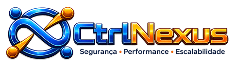

Cibersegurança e proteção de dados
Proteção de dados, análise de vulnerabilidades, políticas e fortalecimento dos controles de segurança.
SOLUÇÕES / INFRAESTRUTURA / SEGURANÇA
Mantivemos a página de soluções com a mesma lógica de apresentação do site atual, agora alinhada ao posicionamento da ctrlNexus e ao foco em sustentação, segurança e continuidade.

Veja como a ctrlNexus entrega soluções alinhadas com segurança, performance, continuidade do negócio e sustentação da operação.
Proteção de dados, análise de vulnerabilidades, políticas e fortalecimento dos controles de segurança.
Configuração, revisão e gerenciamento de regras para controlar tráfego e reduzir riscos.
Planejamento, organização e otimização de redes corporativas cabeadas e sem fio.
Acompanhamento de disponibilidade, desempenho e alertas para reduzir paradas e gargalos.
Migração, gerenciamento e estruturação de ambientes em nuvem com governança e escalabilidade.
Estratégias de backup, recuperação de dados e continuidade para ambientes que não podem parar.
Controle de usuários, permissões e políticas de acesso com rastreabilidade e mais segurança.
Acompanhamento e evolução do ambiente com foco em resultado prático, segurança e continuidade.
Levantamos riscos, gargalos e prioridades para direcionar as decisões técnicas com clareza.
Implementamos melhorias com boas práticas, documentação e visão de continuidade.
Acompanhamos resultados, desempenho e pontos de evolução para manter a operação saudável.
A ctrlNexus pode apoiar desde uma necessidade pontual até uma frente contínua de sustentação e segurança para o seu ambiente.